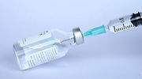

Las vacunas de Pfizer y Moderna también causan trombos de manera excepcional, según un estudio
Esto se sabe desde hace tiempo.En enero y febrero hubo articulos del NY times advirtiendo de fallecimientos por trombos y bajas plaquetas en Pfizer y Moderna.Por algun motivo las autoridades sanitarias solo se han hecho eco de los efectos de AstraZeneca y Janssen hasta ahora.
Espero que el hecho de que precisamente AstraZeneca y Janssen fueran las unicas farmaceuticas que se comprometieron a vender sus vacunas a precio de coste no tenga nada que ver con la mala publicidad que han recibido hasta la fecha.
Posted On: 2021-04-15T00:00:00
Posted By: pro-vacunas
La Bolsonara facha nos va a traer la rusa, que no la quieren ni los rusos
Posted On: 2021-04-15T00:00:00
Posted By: Ana
si las posibilidades son cuatro por 100.000...que se sepa.....ponerosla vosotros.
Posted On: 2021-04-15T00:00:00
Posted By: JUAN
si las posibilidades son cuatro por 100.000...que se sepa.....ponerosla vosotros.
Posted On: 2021-04-15T00:00:00
Posted By: JUAN
Probablemente detrás de todas estas informaciones haya intereses individuales económicos ,estamos tan acostumbrados a la corrupción y al egoísmo individual que a mi ya no me extraña nada ,que me vacunen y en paz
Posted On: 2021-04-15T00:00:00
Posted By: a quien quiera entender
Con una dosis de AstraZeneca vamos bien servidos.Que sigan vacunado a los que no les han puesto nada.
En mi caso no creo que me hubiese hecho falta ni una dosis.Dos lo veo excesivo, porque si no he tenido ningún efecto secundario con la vacuna, es casi seguro que el virus no me afecta.Y ahora en verano otra dosis para nada.
Posted On: 2021-04-15T00:00:00
Posted By: Con una me vale
...al 8...La verdad que hablar sin saber de lo que se habla sòlo produce confusión en los que lo leen y deja en ridículo al que habla.
Gran parte de todo el problema de las vacunas es la información que muchas veces se da sin contrastar.Habla ya de ello hasta Belén Esteban...que país!!
Posted On: 2021-04-15T00:00:00
Posted By: juanjovero
Al final lo que queda demostrado es que no tienen ni idea de nada y que experimentan con el rebaño y su ignorancia.Todo en aras de la economía para que el sistema, que esta caído y gravemente infectado, no se derrumbe totalmente.
¿Quién o quienes manejan este cotarro?.
¿Quién o quienes se benefician de este caos?.
Tenemos un enemigo común muy inteligente, pero como es invisible, al parecer no existe.
Las pandemias en la antigüedad no se extendían tanto porque no había movimientos tan incontrolados como hay ahora.¿Queríais un mundo súper conectado por todos los medios posibles?, pues ya lo tenéis, y lo que estáis viendo, es solo una avanzadilla de lo que os espera.
Posted On: 2021-04-15T00:00:00
Posted By: Idolos de hierro con los pies de barro.
Creo que hay muchos intereses oculto la pfizer es la más cara y los medios de comunicación solo hablan de las otras 2 vacunas que están a precio costó, para engañar al rebaño y comprar las cara, eso para mí es especulación, ocultar información de unas y dar bastante información de otras con interés económico, ahí alguien que se está forrando, a costa de la salud de todos.
Posted On: 2021-04-15T00:00:00
Posted By: Intereses
Este estudio quien lo hace???la universidad de Oxford, que es la de la vacuna astrazeneca, que yo sepa, no se ha publicado ningún trombo con Pfizer y Moderna???pero hay intereses económicos!!!!!
Posted On: 2021-04-15T00:00:00
Posted By: V?ctor
Al final lo que queda demostrado es que no tienen ni idea de nada y que experimentan con el rebaño y su ignorancia.Todo en aras de la economía para que el sistema, que esta caído y gravemente infectado, no se derrumbe totalmente.
¿Quién o quienes manejan este cotarro?.
¿Quién o quienes se benefician de este caos?.
Tenemos un enemigo común muy inteligente, pero como es invisible, al parecer no existe.
Las pandemias en la antigüedad no se extendían tanto porque no había movimientos tan incontrolados como hay ahora.¿Queríais un mundo súper conectado por todos los medios posibles?, pues ya lo tenéis, y lo que estáis viendo, es solo una avanzadilla de lo que os espera.
Posted On: 2021-04-15T00:00:00
Posted By: ..
Juanjovero, tu que sabes tanto.
Porqué no lo explicas?
Frases hechas las pone cualquiera.
Posted On: 2021-04-15T00:00:00
Posted By: Al 9
Si ya.
A otro perro con ese hueso.Moderna no ha reportado ni uno en mas de 60 millones de vacunados, tal y como publicaron en un estudio.
Me parece que a mucha gente le encanta la de trobozeneca.Pues que se la queden toda
Posted On: 2021-04-15T00:00:00
Posted By: hermes

Content Date: 2021-04-15
Download Date: 2021-09-16
Document ID: L0C04G7QF